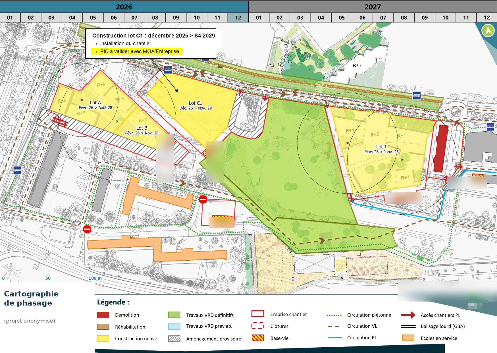
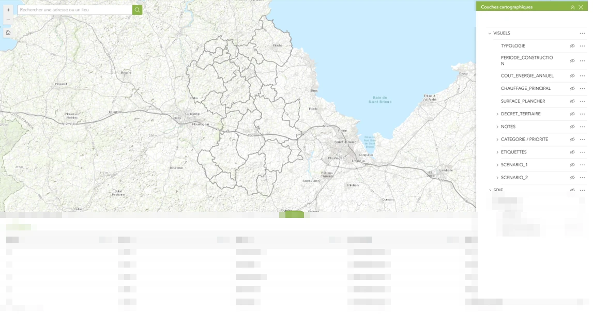
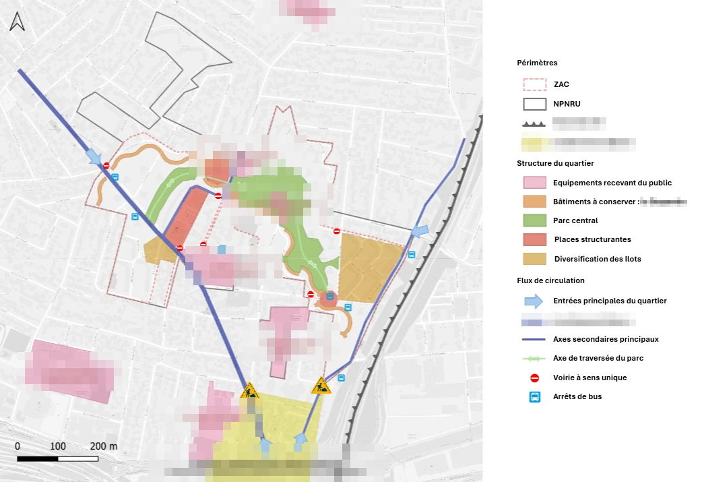
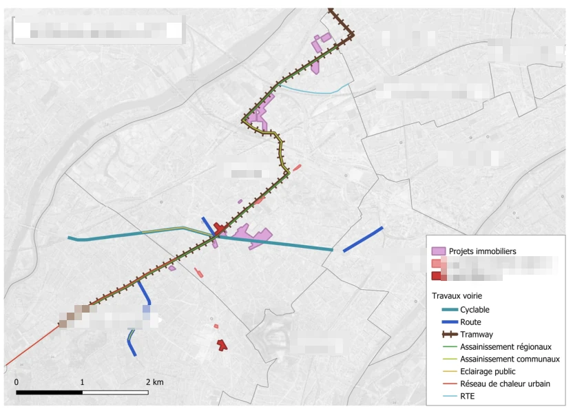

Mathis Burgevin
Ingénieur en aménagement du territoire, diplômé de Polytech Tours, option Réseau.
Suivi et coordination d’opérations, plannings, analyses, cartographie et structuration des données territoriales, conception d’outils qui font gagner du temps à une équipe.
Aperçus
5 aperçus sur 7 réalisationsCinq réalisations de mes stages chez Egis. Les noms sont masqués, et la page Expériences donne le détail.




En détail
3 pagesCompétences
5 domainesSuivi et planning
Plannings de synthèse, MS Project, Excel, Power Query, macros, phasage, comptes rendus, comités techniques, visites de site
SIG (systèmes d’information géographique) et données
QGIS, PyQGIS, WebSIG, ArcGIS Online, Experience Builder, Survey123 (formulaires de terrain), SQL, PostgreSQL, PostGIS, production cartographique, analyses spatiales, structuration de données
Développement et outils
Applications web (avec l’appui de l’IA), Python, Git, cartographie web (Leaflet), AutoCAD (notions), outils de suivi réutilisables, rapports automatisés
Énergie et bâtiment
Schéma directeur immobilier et énergétique, bilan carbone (méthode ADEME)
Langues et formation
Anglais : C1 (TOEIC 950/990), Espagnol : A2, Mandarin : notions
Ingénieur Polytech Tours (option Réseau)
Semestre Erasmus à Harokopio University, Athènes
Étude de cas
Un exercice reçu en présélection : suivre des aménagements cyclables et en tirer un tableau de bord. Ma réponse en quatre étapes, et les deux sorties qu’elle décrit.
Prendre contact
Écrivez-moi pour un poste en aménagement et urbanisme, en réseaux et infrastructures, en énergie, en mobilité ou en environnement, en bureau d’études comme en collectivité. Je suis basé à Paris et mobile partout en France.